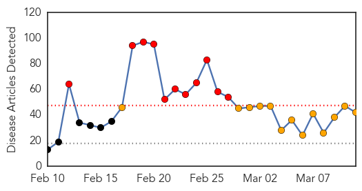
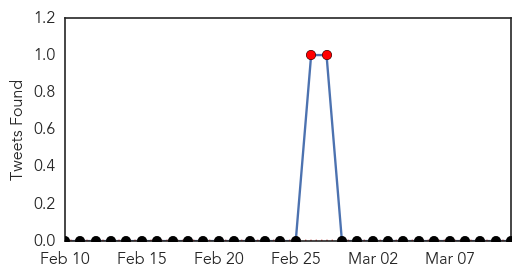

30 Day Trends
Web: 11 alerts, 13 warnings
Twitter: 5 alerts, 0 warnings
Top Articles:
- 1.000
- India Struggles to Contain Worst Swine Flu Outbreak Since 2009
- 1.000
- Manipur swine flu patient dies
- 1.000
- India swine flu has mutated to become more deadly as virus claims 1,200 lives
- 1.000
- India Struggles to Contain Worst Swine Flu Outbreak Since 2009
- 0.999
- Haryana minister's advice to avoid Swine flu
- 0.999
- Silent spread of bird flu raises pandemic fears › News in Science (ABC Science)
- 0.999
- Injectible vaccine has few takers among health workers
- 0.998
- Control swine flu: Assam CM tells health department
- 0.998
- Control swine flu: Assam CM tells health department
- 0.998
- Control swine flu: Assam CM tells health department
- 0.998
- City doctors recommend awareness and vaccination to combat swine flu
- 0.998
- INFORMATION AND SERVICES IN GOA. Goa News, Goa Konkani News, Goa Sunaparant News, Goan Konakani News, Goa Video News, Goa Yellow Pages
- 0.998
- Kansas State professor tracks deadly diseases from animals to humans
- 0.998
- Kansas State professor tracks deadly diseases from animals to humans
- 0.997
- Control swine flu: Assam CM tells health department
- 0.997
- Control swine flu: Assam CM tells health department
- 0.997
- Control swine flu: Assam CM tells health department
- 0.997
- Control swine flu: Assam CM tells health department
- 0.996
- Vaccinating against swine flu now not advisable
- 0.996
- Swine flu confirmed but `no cause for panic` says Principal Secy Health
- 0.993
- District magistrate among 126 swine flu patients in Bihar
- 0.993
- Clue to swine flu severity
- 0.993
- Nagpur Municipal Corporation claims it’s fighting swine flu with all means
- 0.991
- Haryana minister's advice to avoid Swine flu: Don't shake hands, say 'namaste'
- 0.987
- For swine flu patients in Narela, nearest treatment centre is 25 km away
- 0.986
- Suspected swine flu patient dies in IDH
- 0.984
- Swine flu outbreak sweeping India worse than health officials admit, study suggests
- 0.984
- No Change in Strain of H1N1 Virus, say Doctors
- 0.984
- Khader: Standard Treatment Protocol for Swine Flu Soon
- 0.974
- 'Govt. remaining mute witness to swine flu': PC Chacko
- 0.966
- Woman dies of swine flu infection, death toll in Mumbai touches 23
- 0.959
- Camphor, cardamom have no role in killing swine flu virus, say Bhopal docs
- 0.953
- Orientation programmes for doctors treating H1N1 patients: Khader
- 0.939
- Swine flu kills senior doctor kin demand compensation
- 0.933
- Four new swine flu cases detected in Chitwan
- 0.930
- Palestinian from Bethlehem dies of H1N1 swine flu: medics
- 0.919
- Swine Flu claims three lives in Jharkhand
- 0.879
- Indian Swine-Flu Virus Reveals Dangerous, New Mutation
- 0.748
- Namaste can help check swine flu spread: Anil Vij
- 0.743
- Swine flu cured but shock of treatment in dirty ward stays
- 0.737
- Swine flu protest rocks House
- 0.580
- Pricing of electricity and gas
Top Tweets:
- 0.671
- RT: FLU SCAN: H7N9 evolution and threat to humans; H1N1 flu strains in India; WHO confirms H5N1 cases in Egypt http://t.co/v1MIc…
- 0.570
- RT: Swine flu outbreak sweeping India worse than health officials admit, study suggests http://t.co/ngBvcVgfHB http://t.co/spXqBS…
Web/News Articles
Tweets
Article Locations

Article Confidences